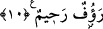

cimriliğiyle hasta bulunan kimse, böyle değildir, o asla rahatlayamaz.
Ebû Hüreyre (r.a.)’den rivâyet edildiğine göre o, Rasûlullah (s.a.)’in şöyle
buyurduğunu işitmiştir: “Allah yolunda tozlanmak ile cehennem dumanı bir kulda
ebediyen birleşmez. İman ile de cimrilik ve kıskançlık bir kulun kalbinde ebediyen
birleşmez.”[51]
Peygamberimiz (s.a.) şöyle buyurmuştur: “Farz olan zekâtını veren, misafire ikram
eden ve bir felâket anında yardımda bulunan cimrilikten berî olur.”[52]
Şuh denilen cimrilik, bahilliğin en kötüsü ve çirkinidir.
Yine bir hadis-i şerifte: Peygamberimiz (s.a.) şöyle buyurmuştur: “Zulümden sakının
çünkü zulüm, kıyamet günü karanlıktan ibârettir. Şuh’dan sakının çünkü şuh, hırs ve
kıskançlık sizden evvelkileri helâk etmiştir. Onlar birbirlerinin kanlarını döktüler ve
haramları helâl saydılar.”[53]
Hâfız şöyle demiştir:
Kârun hazinesini zaman yele verdi
Bunu gönlüne gizlice söyle o da altını saklamasın.
Dirhem seven bir kimse her ne kadar cömertlik lafı etse de
İhsan dilencisi onun kapısından bir şey elde edemez.
Eski bir meseldir; hayvanın tersi/gübresi
Turunç gibi meyveye benzer, fakat onda turunç kokusu yoktur.
10. Bunların arkasından gelenler şöyle derler: Rabbimiz! Bizi ve bizden önce
gelip geçmiş îmanlı kardeşlerimizi bağışla; kalplerimizde, îman edenlere karşı
hiçbir kin bırakma! Rabbimiz! Şüphesiz ki sen çok şefkatli, çok merhametlisin!
“Bunların arkasından gelenler şöyle derler:” Bunlar İslâm güç kazandıktan sonra
Medine’ye gelenlerdir. Yahut iyilik ve ihsân ile ashâb-ı kiramı tâkib edenlerdir. Bunlar
muhâcir ve ensarın dışında onlardan sonra kıyamete kadar gelmiş ve gelecek olan îman
sâhipleridir. Bu sebeple bu âyet-i kerimenin bütün mü’minleri hükmü içine aldığı
söylenmiştir. Bu durumda yalnız Medine’ye değil de varlık alanına gelenler
kasdedilmiştir. Bir hadis-i şerifte şöyle buyrulmuştur: “Ümmetimin durumu yağmura
benzer, evveli mi, sonu mu hayırlı ve iyi olduğu bilinmez.”[54]
Yâni müminler menfaat ve rahatlıkta bahar yağmuru gibidirler. Bütün halka ve her bir
şeye yağmurun başı mı sonu mu daha iyidir daha faydalıdır bilmezler. Benim ümmetimin